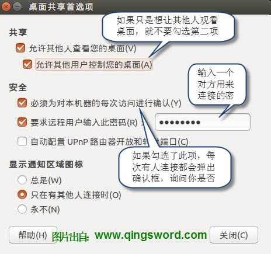
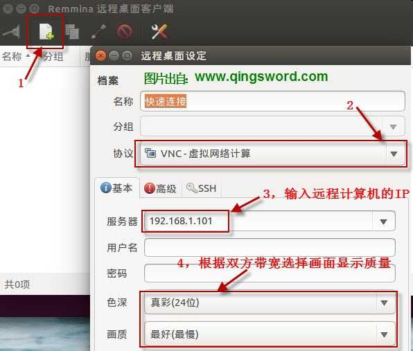
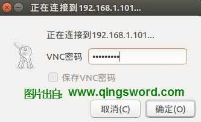
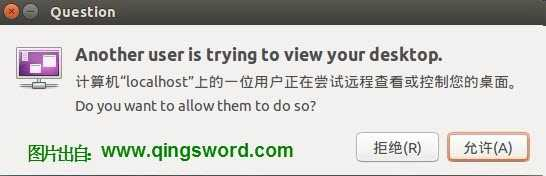
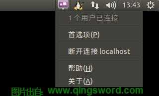
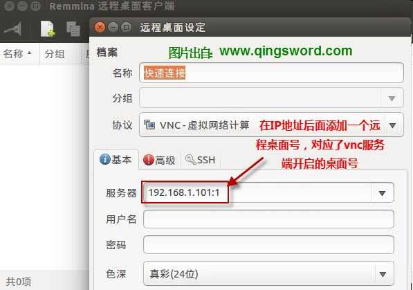

[ubuntu入门手册]-17-使用vnc与ssh远程管理
引言
这篇文章给大家介绍ubuntu下三种远程管理的方法，两种vnc远程图形化接入管理方式，一种ssh终端远程接入管理方式。
文章目录
- 0×1.使用vino-preferences开启远程桌面共享
- 0×2.使用vncserver开启远程桌面服务
- 0×3.如何让vncserver随机启动
- 0×4.安装openssh-server实现远程终端ssh登陆
0×1.使用vino-preferences开启远程桌面共享
首先给大家介绍ubuntu系统自带的远程桌面共享软件"vino-preferences"，它使用的也是vnc连接方式。
服务端（被连接者）请参考下面步骤开启桌面共享：
点击启动栏"ubuntu图标"中并搜索"vino-preferences"，打开"桌面共享"；或者在终端中输入vino-preferences来打开它；

客户端（连接者），点击启动栏"ubuntu图标"中并搜索"remmina"，打开"Remmina远程桌面客户端"；或直接在终端输入remmina；
输入服务端设置的连接密码，连接；
在服务端会弹出确认框（如果设置了必须确认），点击确认即允许客户端查看或控制计算机；
服务端可以通过系统顶部托盘图标中的"断开连接"，来终止客户端的控制； 
这种vnc的优点：无需安装其他软件，对gnome桌面的支持很好，使用方便；缺点是，必须使用某个账户登陆计算机图形界面后，才可开启这种远程桌面，而远端连接的桌面和服务端登陆的桌面同属一个桌面环境，类似于QQ远程协助，如果想要开启多用户登陆远程桌面的功能（类似windows server远程桌面）请参考本文第二部分。
0×2.使用vncserver开启远程桌面服务
1）在服务端安装vncserver与xfce4桌面环境：
qing@qingsword.com:~$ sudo apt-get install vnc4server xfce4
2）启动服务并替换桌面配置文件为xfce4
#开启vncserver的1号桌面 qing@qingsword.com:~$ vncserver :1 You will require a password to access your desktops. Password: #输入vnc连接密码 Verify: #again New 'qingsword.com:1 (qing)' desktop is qingsword.com:1 #开启一次vncserver桌面后，会在当前用户的家目录下生成配置文件，使用下面的命令先关闭刚才开启的这个vnc，我们需要修改一下默认的配置文件 qing@qingsword.com:~$ vncserver -kill :1 Killing Xvnc4 process ID 14711 #使用vim或gedit，修改当前用户家目录下.vnc/xstartup文件 qing@qingsword.com:~$ vim .vnc/xstartup #使用下面的内容，替换默认内容 #!/bin/sh unset SESSION_MANAGER unset DBUS_SESSION_BUS_ADDRESS startxfce4 & [ -x /etc/vnc/xstartup ] && exec /etc/vnc/xstartup [ -r $HOME/.Xresources ] && xrdb $HOME/.Xresources xsetroot -solid grey vncconfig -iconic & #再次开启vnc1号桌面 qing@qingsword.com:~$ vncserver :1 #想要开启多个桌面只需要递增':'后面的数字，例如，开启2号桌面 qing@qingsword.com:~$ vncserver :2
3）在客户端通过Remmina连接（或者任何能连接vnc的客户端软件）；
Ps：使用vncserver能在服务端开启任意多个互不干扰的远程桌面环境。
备注：xfce4桌面终端tab失效解决方法
xfce4的终端tab键因为被系统窗口占用了热键，所以无法使用，可以在终端中输入"xfwm4-settings"打开窗口管理器，选择"键盘"，可以看到窗口快捷键中动作一列有"切换同一应用程序的窗口"选项，将该选项的快捷键清除。
0×3.如何让vncserver随机启动
如果我们想让vnc4server随机启动，需要一个启动脚本，一个配置文件，然后将启动脚本加入开机启动文件中，请看下面的演示：
#1.首先切换到root，操作比较方便，有些朋友root还没有设置密码可以sudo passwd root先给root设置个密码再执行下面的操作，或者在所有命令前面加上sudo
qing@qingsword.com:~$ su -
#2.创建启动脚本
root@qingsword.com:~# vim /etc/init.d/vncserver.sh
#复制下面的内容到文件中
unset VNCSERVERARGS
VNCSERVERS=""
[ -f /etc/vncserver/vncservers.conf ] && . /etc/vncserver/vncservers.conf
prog=$"VNC server"
. /lib/lsb/init-functions
REQ_USER=$2
echo -n $"Starting $prog: "
ulimit -S -c 0 >/dev/null 2>&1
RETVAL=0
for display in ${VNCSERVERS}
do
export USER="${display##*:}"
if test -z "${REQ_USER}" -o "${REQ_USER}" == ${USER} ; then
echo -n "${display} "
unset BASH_ENV ENV
DISP="${display%%:*}"
export VNCUSERARGS="${VNCSERVERARGS[${DISP}]}"
su ${USER} -c "cd ~${USER} && [ -f .vnc/passwd ] && vncserver :${DISP} ${VNCUSERARGS}"
fi
done
#3.添加可运行权限
root@qingsword.com:~# chmod +x /etc/init.d/vncserver.sh
#4.创建配置文件
root@qingsword.com:~# mkdir /etc/vncserver
root@qingsword.com:~# vim /etc/vncserver/vncservers.conf
#添加下面这一句到文件中,意思是，使用qing用户的.vnc配置登陆vnc1号桌面；如果有多个用户开启了vnc，可以按照下面的格式添加，例如VNCSERVERS="2:qingsword",意思是，使用qingsword用户的.vnc配置登陆vnc2号桌面，以此类推
VNCSERVERS="1:qing"
#5.在rc.local中添加这个启动脚本（或者将这个启动脚本放在任何你需要的启动等级和启动目录里面）
root@qingsword.com:~# vim /etc/rc.local
#在文件的exit 0前面输入下面这一行
bash /etc/init.d/vncserver.sh
设置完成后，每次重启，都会自动启动vncserver并且使用用户qing的.vnc文件夹中的配置开启1号桌面等待连接，如果不需要自动启动了，移除启动文件命令即可。
0×4.安装openssh-server实现远程终端ssh登陆
上面介绍了ubuntu远程桌面的两种连接方式，这一节介绍ubuntu下的远程终端ssh的搭建。
服务端：
#1.检查自己是否安装了ssh qing@qingsword.com:~$ ssh localhost #显示下面这个表示没有安装，如果提示输入密码，则已经安装 ssh: connect to host localhost port 22: Connection refused #2.安装openssh-server qing@qingsword.com:~$ sudo apt-get install openssh-server #ssh的默认端口是22，可以通过下面的配置文件更改，找到Port 22那一行，将22替换成一个自定义的端口 qing@qingsword.com:~$ sudo vim /etc/ssh/sshd_config #更改端口后，需要使用参数-p指定端口来连接 qing@qingsword.com:~$ ssh -p 端口号 qingsword@192.168.1.100 #如果想卸载ssh，请使用下面的命令，完全删除ssh（purge参数是删除安装包和配置文件） qing@qingsword.com:~$ sudo apt-get --purge remove openssh-server
客户端：
#连接到192.168.1.100，并使用qingsword这个用户登陆ssh qing@qingsword.com:~$ ssh qingsword@192.168.1.100 #ssh默认情况下不允许使用root用户登陆，如果想使用root用户登陆需要修改配置文件并重启ssh qing@qingsword.com:~$ sudo vim /etc/ssh/sshd_config #找到"PermitRootLogin"默认值是"without-password"，修改成 PermitRootLogin yes #重启ssh服务即可用root用户登陆ssh qing@qingsword.com:~$ sudo service ssh restart
连接完成后在服务端使用w命令显示如下：
#第一个 :0 是init进程，pts/14是服务器上开启的一个终端，pts/0就是远程连接上来的ssh虚拟终端，连接上来的IP地址是192.168.1.101 qing@qingsword.com:~$ w USER TTY FROM LOGIN@ IDLE JCPU PCPU WHAT qing :0 :0 19:28 ?xdm? 2:08 0.15s init --user qing pts/14 :0 19:28 6.00s 0.33s 0.01s w qing pts/0 192.168.1.101 19:33 11:58 0.07s 0.07s -bash